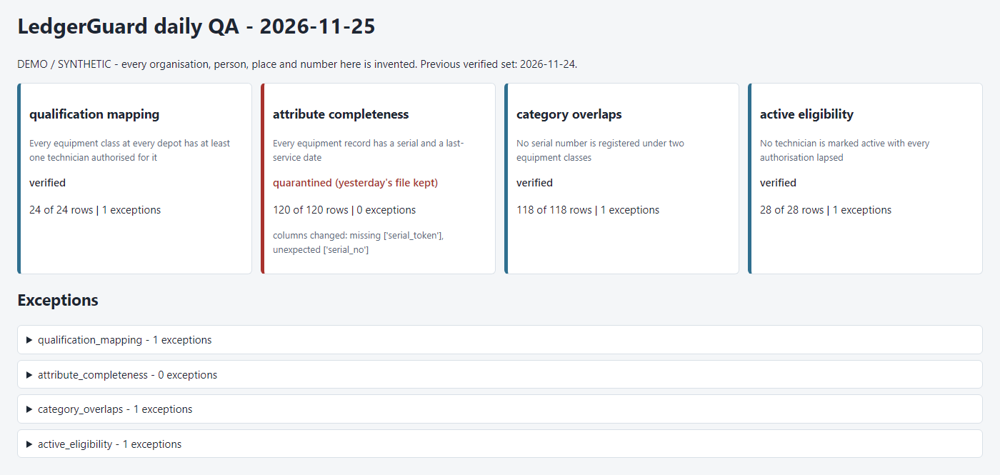

LedgerGuard Data Quality
Daily export checks that never mistake an empty file for success, with archives you can safely restore.
13 automated tests. Video replayed from a real run (1.1 s).
Imagine a rental shop for big machines with four branches. Every morning a computer pulls lists from three systems and from one old program that can only share its data by pressing an Export button. One day that old program says "Export complete" but saves an empty sheet. The computer sees today's file is there and reports "all good" - and every report that morning is built on nothing. LedgerGuard refuses to believe a file just because it exists: it counts the rows, checks the columns, and if anything is off it moves the file aside and keeps yesterday's good one, clearly marked as old.
LedgerGuard runs four daily checks over an equipment database, two CSV systems and a mock desktop program's export: every class at every depot has an authorised technician, every item has a serial and service date, no serial is registered under two classes, and no technician is active with every authorisation lapsed. Before any check, each export must prove it is usable: exact columns, the row count the source itself reports, no blank keys. An export that fails is quarantined with the exact reason and yesterday's verified file is carried forward and marked stale. Each day's outputs are published as one set after the previous set is archived with a SHA-256 manifest, and restore refuses any archive whose files no longer match.
Step by step
registry.sqlite | Equipment: id, class, depot, serial, last service date, status |
roster.csv | Technicians: id, alias, depot, active flag |
authorizations.csv | Which classes each technician may service, and until when |
desk app export | The same equipment list, but only available through an old program's Export button |
current/exceptions.xlsx | A summary tab and one tab per check |
current/dashboard.html | A card per check: verified or quarantined, rows expected and found, exceptions |
archive/<day>/ | Every earlier day's set with its MANIFEST.json |
Predict, then see what the real run did
Every scene of the recorded run. Read what is about to happen, make a prediction, then reveal the actual terminal output. To run it yourself one scene at a time, use the CivicWorks Lab.
The database, read from its own migrations
Built by applying the project's numbered migration scripts to an empty database. Blue marks a primary key; amber arrows are foreign keys - links the database itself enforces.
qa_run
- run_id text pk
- run_date text
- started_at text
- verdict text
export_job
- job_id integer pk
- run_id text → qa_run.run_id
- job_code text
- source_adapter text
- expected_rows integer
- observed_rows integer
- state text
- reason text
- file_sha256 text
- exceptions integer
- unique (run_id, job_code)
archive_item
- archive_id integer pk
- run_id text → qa_run.run_id
- file_name text
- sha256 text
- archive_path text
- restore_path text
What it produced in the recorded run



Why it is built this way
Compare the exported rows with the source's own count
instead of: Accepting any non-empty fileA truncated export has rows; only the source's count shows that a third is missing.
Keep yesterday's file, marked stale
instead of: Publishing nothing for that checkPeople still have the last good data, and the dashboard tells them it is old and why.
Archive before replacing
instead of: Overwriting the outputsEvery day can be restored exactly, and the manifest proves it has not been altered.
Treat the desk app's 'Export complete' message as meaningless
instead of: Trusting the programPrograms report success when they finish running, not when they produced the right data.
What goes wrong, and what happens
| situation | result |
|---|---|
| Export writes only a header row | Quarantined: 'the file has a header but no rows; the source has 120'. |
| A column is renamed by a software update | Quarantined: 'columns changed: missing serial_token, unexpected serial_no'. |
| An archived file is edited | Restore refuses and names the file. |
Questions it answers
In shortPrograms can save an empty or half-finished file and still say they worked.
In depthprove() checks exact header, row count against the source's own count, and non-blank keys before any QA runs.
In shortWhen the shape of the data changes - a column renamed or removed - without anyone telling you.
In depthHeader comparison against the contract; missing and unexpected columns are named in the quarantine reason.
In shortCheck every archived file's fingerprint first; if any changed, refuse.
In depthMANIFEST.json SHA-256 per file; restore copies to staging then swaps, keeping the displaced set.
cd ledgerguard-data-quality pip install -e ".[dev]" python -m ledgerguard demo --out build/demo python -m pytest